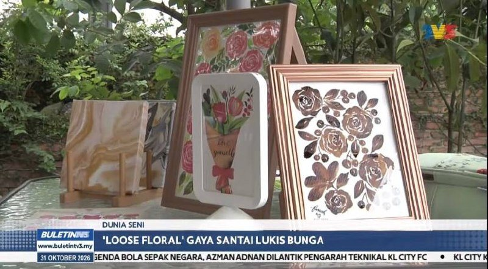
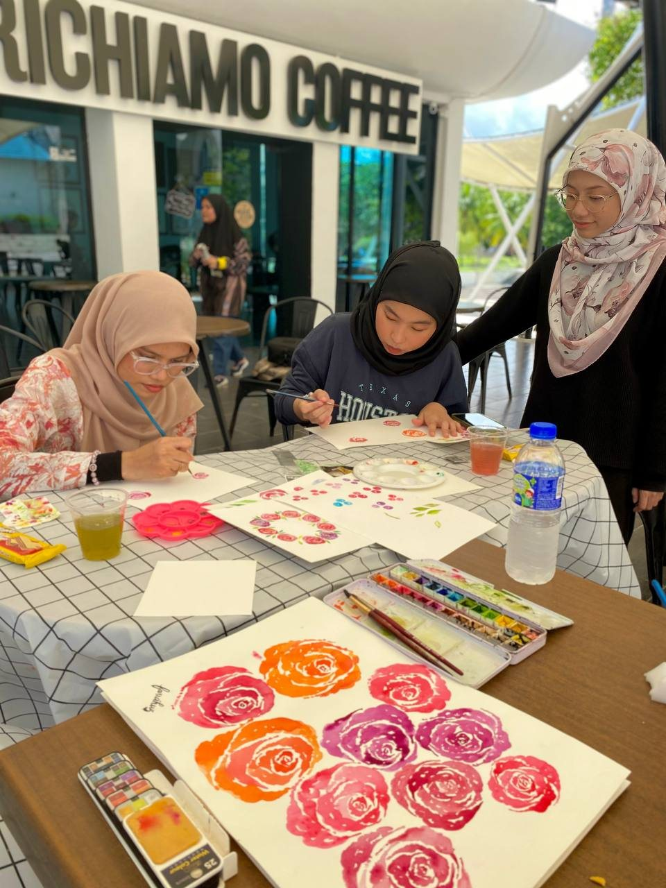
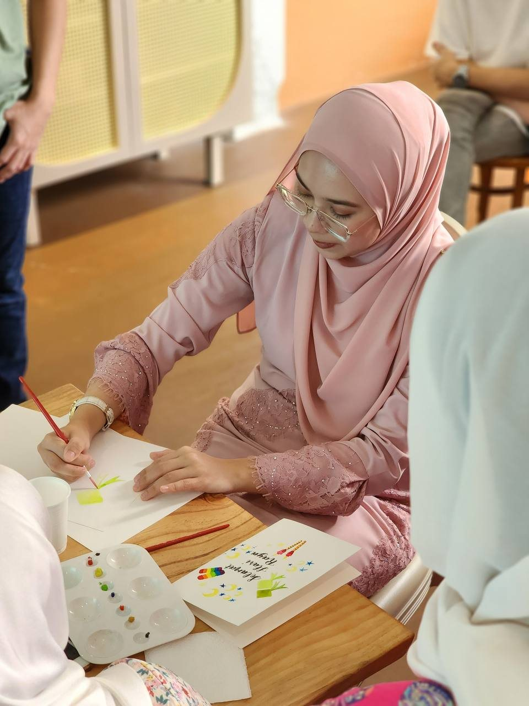
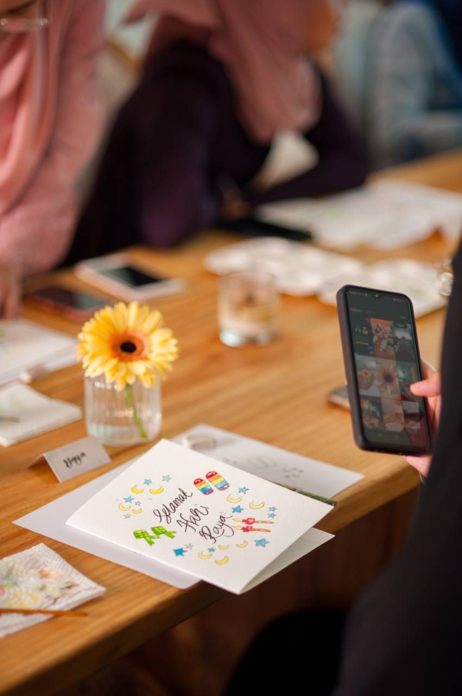
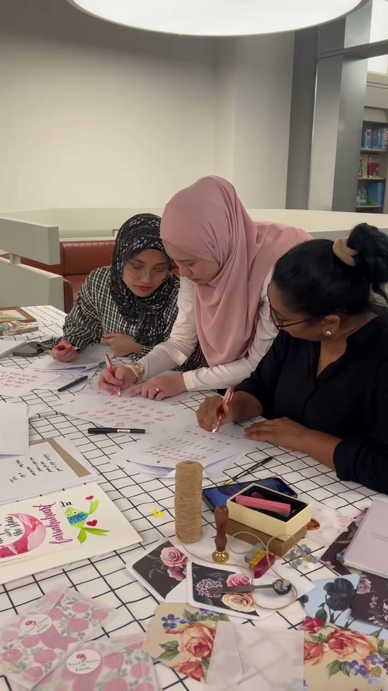
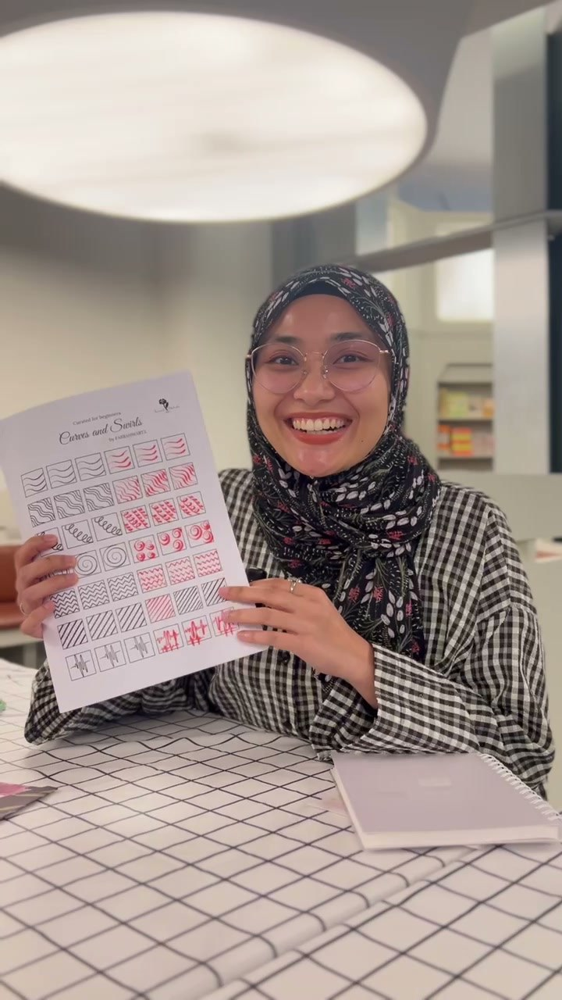

Floral Watercolour
Explore roses, hydrangeas and tulips through an introduction to materials, basic watercolour strokes and supported practice. Beginner-friendly; art materials are provided.
Discuss this session →Floral art · Thoughtful guidance · Creative connection
Floral watercolour and acrylic workshops by Farrah Wahida, for beginners, communities and teams who want a creative experience—not just another event.
In-person workshops · Details tailored to your audience

Meet your facilitator
I help people slow down, notice the shapes in nature, and find their own way with a brush.
I’m Farrah Wahida Zulkifli, an art enthusiast with a passion for psychology. Through Farrah Wahida Artz, I create approachable floral watercolour, acrylic and lettering experiences that invite people to learn, experiment and enjoy the process.
For venues and collaborators, the aim is a well-considered session that fits your audience and space—whether you are planning an intimate creative gathering, a private celebration or a team activity.
Ways to create together
Each collaboration begins with your audience, occasion and space. The outline below shows possible directions; the exact activity, materials and duration are confirmed in your proposal.
Explore roses, hydrangeas and tulips through an introduction to materials, basic watercolour strokes and supported practice. Beginner-friendly; art materials are provided.
Discuss this session →A creative lettering workshop with cursive writing worksheets and fountain pens. Watch a moment from Farrah's Art Lettering Workshop on 24 June 2024.
Watch the workshop on Instagram →A hands-on session exploring flowing colour and abstract patterns on canvas. Ask about the available format for your group or venue.
Discuss this session →Featured on Malaysian television
Two television features introduced Farrah's loose floral watercolour practice to a wider audience—through her paintings, her process and her own story.

A television arts feature on the relaxed, expressive style of floral painting. Broadcast 31 October 2026.

An interview and painting feature exploring a floral practice guided by colour, water and imagination. Broadcast 31 October 2026.


Selected experience
A selection of facilitated sessions and art programmes, drawn from Farrah's workshop portfolio. Participation programmes are identified separately from workshops she has conducted.
In collaboration with S’Perience at Picco Polo Cafe, Penang. Farrah coached participants to create DIY Hari Raya greeting cards with watercolour. The event collected donations for Penang Deaf Association.
A 2.5-hour beginner-friendly session at BookXcess, LaLaport Kuala Lumpur, limited to 10 participants. The session introduced materials and basic strokes, with floral painting practice and materials provided.
An outdoor floral painting session at Richiamo Coffee with IIUM Arts Club. Participants explored floral wreaths and cards before sharing their completed work.
Art Lettering Workshop featuring cursive writing worksheets and fountain pens. Shared on Instagram on 24 June 2024.
View the workshop video →2022 · Community Based Tourism: Arca Dasar Laut di Pulau Langkawi, Balai Seni Negara
2020 · Program Jelajah Keusahawanan Seni, Balai Seni Negara
2018 · Bengkel Seni Melakar dengan Arang, Rumah Seni Selangor
2018 · Loose Floral Watercolour Workshop, Balai Seni Negara
Inside the workshops
Real moments from Farrah's sessions: learning the basics, trying something new, and leaving with work made by hand.









Historical event details only. The promotional price shown is not a current workshop rate.
A clear working arrangement
Pricing reflects preparation, facilitation, materials, group size and travel—not just time spent teaching. Choose a starting structure for your enquiry; final scope and fees are confirmed in writing.
Contact Farrah for a quotation tailored to your group, venue and session requirements.
Simple from the start
Tell me your preferred date, location, audience, estimated group size and the kind of experience you have in mind.
We confirm the activity, timings, materials, responsibilities and commercial terms before anything is announced.
I facilitate the agreed session so your guests can settle in, learn and enjoy the process of making.
Start a conversation
Planning a workshop, private session or creative partnership? Share a few details and let's see what would work for your audience and space.